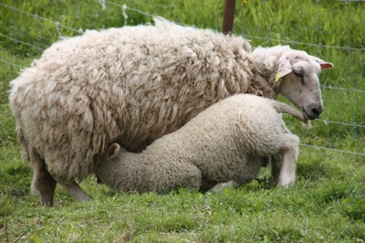

En liten fortelling......

Når'u kjører gjennom Vestfold, ser’u endeløse jorder...
Men i endan ta jordene, og litt længer vest, finner’u småkuppert landskap med nydeli' bøkeskog. Bøkeskogen er like flott til alle årsti´er. Ja, mye blandingsskog og dyreliv er`e å.
Har´u kommi så langt har´u b’ynt å nærme’ræ Aarholt-tunet Gjestegård. Det ska’kke mer enn sju km. vest for E-18, så har’u b’ynt å puste roligære, senket skuldrene, løst snippen og tatt`æ i å smile te’ sidemann. For her, - litt utenfor folkeskikken, finner’u trivselen, - og humor’n og tida.

{kind=link}
Og brukær’u kartet du har fått fra oss da du bestilte, så finner’u lett Aarholt-tunet Gjestegård. Men ikke prøv deg opp hit med GPS på egenhånd. Da ennær´u fort i skauen på en sti. Dæ’r mye mer “krongletere” å finne fram på indre veier i Vestfold enn du trur. For alle veiene står ikke på GPS'n veit´u for å si det på den måten dem snakkær her i område'.

Men når’u har finni fram, så står vi å tar imot gruppa di. Da finner’u sjel i veggane i de sju tømmerhusa. Og attmosfære. Tømmervegger som forteller om forti´as måte å bo på. Bakæråmmen og grua midt i Bryggerhuset gir kos og hvile for den som sitter med kaffekoppen og glor i ilden.

Der er god, himelaga mat for de som har bestilt mat til gruppa si. Sånt legges merke til veit'u.
Nå er husa restaurert, med bad og kjøkkenkrok i alle boenheter. Fleire tømmerhus er fløtta hit og satt istand, og tunet er i grunnen innmari koselig. Og låven er et sant syn. I de to høyløene, er det et ammfi hvor’em sitter bakefter hverandre og har konfer’anser. Og i det andre høylaet er et stille rom som minner om et kapell. Og midt mellom er Bondesalen for gilde målti'er.
{kind=link}
I fjøset er'e stuer med myke møbler og saueskinn, og i møkkakjelleren er´e innreda til galleri for kunst og stillhet og avspenning. Elever fra Gjennestad Gartnerskole har laga kunsten over tema SAMLIV. (Bildet til venstre.) De har gjenbrukt materialer fra det gamle låvetaket. Og det blei fær´i til 2008. Flott og spessielt.

Vertskapet på gården er Ingfrid Weydahl og Svein Aarholt. Han har navnet sitt fra gården og familien har bodd her i nesten 500 år. Men d´ær veldig fredeli´ her.

Om du kommer med familien på Bondegårsferie, eller med barnegruppa på et dagsbesøk, så ær’e nok dyra som kaller mest på oppmerksomheten. Og alle aktivitetene. Dyrestell og kos, hopping på trampoline eller i halmen, gå på beversafari eller besøke Fredrik i lia som bodde under jor´a for en hundre år sia. Karde og tove ull, bake brød i den gamle bakæråmmen eller mye annet. Men dette kan du lese mer om på de andre sidene.
{kind=link}
Jo, Aarholt-tunet er et sted med opplevelser, kultur, særpreg, intimitet og trivsel. Her møter en både seg sjæl og menneskene som bor her og livet de lever. Det må bare oppleves....